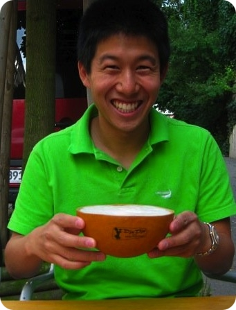

|
|
Hello there! It looks like you're here to learn more about me. Well...
I'm earning my master's in Computer Science at Stanford University focusing in Human-Computer Interaction.
|

|
I grew up in Santa Monica, California, and I have since seen the light and smelled the fresh air of Northern California. Let's just say that I don't plan on leaving anytime soon. I am of Chinese-Indonesian descent, and my middle name "Yap-Chong" means "Industry Regulations." My mother named me Charlton after Charlton Heston for his portrayal of Moses in The Ten Commandments, though I recently found out he was also the "voice of God." At Loyola High School I was a part of the Junior Classical League and, lacking coordination to play sports requiring spherical objects, ran track and cross country. In college I spent a significant amount of time in residential education. I was the Kitchen Manager ('09-'10) in a house of 36 ravenous fraternity men, challenged myself with the task of freshmen Resident Assistant ('10-'11) for Donner House led by the illustrious Linda Paulson, and am doing it one more year as RA of Durand House. Though it was initially frustrating not having grown or changed in appearance for the past 6 years, I do not take my youth for granted. I have spent summers traveling the world, camping, and doing exciting work. I'm interested in #CalmingTech, #EdTech, and #hashtags. You can check out more of my achievements on my resume and projects section. |
I may not have gone where I intended to go, but I think I have ended up where I needed to be.
-Douglas Adams